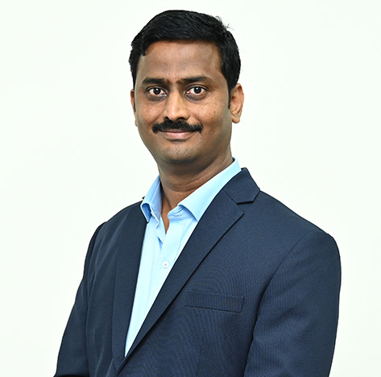

Dr. Kaustubh Vishwas Yadav
Assistant Professor

Assistant Professor
Dr. Kaustubh V. Yadav is an experienced educator with 17 years of teaching experience at both the undergraduate and postgraduate levels. He has presented research papers in national and international conferences and has co-authored several publications catering to the distance learning curriculum. He is passionate about using effective instructional strategies to develop students' academic skills. Dr. Yadav is dedicated to providing high-quality education and is committed to fostering a positive and supportive learning environment.
Positive Psychology, Educational Psychology, Psychometry, Clinical Psychology
Profiles